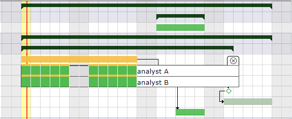
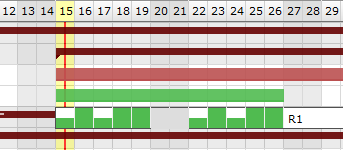
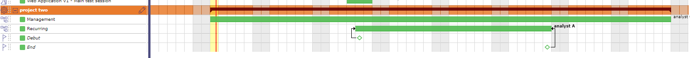

Project planning is of paramount importance to ensure the success of your objective.
By ensuring optimal management of costs, deadlines and quality, project planning allows you to estimate the necessary resources, establish a realistic schedule and define the expected performance indicators. In the absence of planning, you expose your project to risks of financial losses, delays and inadequate quality.
Projeqtor offers a wide choice of control levers to best plan your project and in precise conditions.
The Gantt chart is a tool used in planning and project management to visualize the different tasks that make up a project over time.
It is a representation of a connected, evaluated and oriented graph, which allows the progress of the project to be graphically represented.
Note
For large projects, with many sub-projects and activities, the number of lines to be displayed is limited in order not to deteriorate performance, even if the project selector has already contextualized the display.
This screen allows to define projects planning and follow progress.
When you make a modification on an element of your project, the project must then be recalculated to take it into account.
You have the option of using the automatic calculation function, which, if you make a modification on the planning screen, and only on this screen, will immediately take this modification into account.
If the modification is made on another screen, even if you have selected automatic calculation then, you will have to restart the calculation on the planning screen.
Click on to start the activity planning calculation.
A popup window appears with the list of projects.
The check boxes in the list area allow you to select one or more projects to recalculate.
If you have selected one or more projects with Project Selector then the selected projects will be automatically checked.
Choose the date on which you want to recalculate the project.
By checking the “Hide unselected projects” box, you will only have the projects selected in the project selector and they will be automatically checked.
Swith the button to activate automatic calculation on each change.
Only works on the Gantt Planning view.
If the modification of an element is carried out on the dedicated screen of the element, then it is necessary to click again on BUTTON to restart the computation
All modifications about assignement (rate, name or numbers of resources, dates…) done are not displayed on the new planning screen until having, for this purpose, activited the planning calculation, either in an automatic run plan or not.
On the contrary, the screen planning will not change even if modifications have been loaded yet.
Automatic calculation
Differential calculation = calculation of projects requiring recalculation after being modified.
Complete calculation = calculation of all projects
The calculations are programmed according to a frequency of CRON type (every minute, every hour, at a given hour every day, at a given time on a given week day, …)
The detail of the bars is visible with a right click directly on the bars.
By default, this detail showing the dispatch of the planned work for the resources, does not remain displayed when you no longer hover over the bar after the right click.
Activate this option so that the detail remains displayed
When you click on an item in the list box (WBS) and this item is not displayed/visible directly on the Gantt chart then an auto scroll is executed to this item to visualize it on the chart.
This feature will execute export on client side, in your browser. Thus the server will not be heavy loaded like standard PDF export does.
It is highly faster than standard PDF export.
Warning
This technically complex feature is highly dependent on the browser and is not compatible with all of them.
It is compatible with the latest versions of IE (v11), Firefox, Edge and Chrome. Otherwise, the old export function will be used.
Tip
Forced feature activation/deactivation
To enable this feature for all browsers, add the parameter $pdfPlanningBeta=’true’; in parameters.php file.
To disable if for all browsers, add the parameter $pdfPlanningBeta=’false’;
Default (when $pdfPlanningBeta parameter is not set) is enabled with Chrome, disabled with other browsers
When you perform a calculation on the schedule, you can consult its dedicated history.
In parallel with the history of the elements, you can find the names of the projects that you have recalculated, the duration of the calculation and whether it was completed successfully.
By right clicking on each of the lines you have access to the Gantt submenu which allows you to access certain actions by going through the main menu of the screen.
The progress data view allows you to visualize the progress of all the elements of one or more projects with their consolidation. Each line corresponds to an element.
To display this information, drag the splitter between the list box and the Gantt chart.
Scale available: daily, weekly, monthly and quarter.
The Gantt chart view will be adjusted according to scale selected.
When you are in the planning view on the wbs and gantt area and details area, you can move from one scale to another using the wheel control on your mouse.
Mouse wheel up to increase the scale*.
Mouse wheel down to decrease the scale.
When you continue to increase after the semester, then we loop and return to the day scale, the smallest.
Outside of these areas, the mouse wheel will increase the zoom of your browser.
Condition: If a resource is not or is no longer available on an activity.
The calculator is trying to plan the workload.
The resource assigned to the activity is unable to be planned for this task (absence, calendar, assignment or assignment periods, etc.); then the bar turns purple.
Thanks to the setting on the management of inherited dates, you will be able to display the pink color to indicate that the end date of this task was recovered from a successor element.
Condition: The capacity of the resource has been changed. It can be under capacity or over capacity. That is to say, it does less or more than its FTE.
Condition: the length represents the percentage of completion of the units of work that you enter manually (Delivered - completed) in relation to the length of the Gantt bar.
You can display both progress bars at the same time on the Gantt chart bar.
Dependencies allow to define the execution order of tasks (sequential or concurrent).
All planning elements can be linked to others.
Dependencies can be managed in the Gantt chart and in screen of planning element.
Dependencies between planning elements are displayed with an arrow.
Important
Strict mode for dependencies
The strict dependency mode forces the successor planning element not to start on the same day as the same predecessor but the next day. Even if the task is finished before the end of the day.
To have the successor start on the same day or before the end of the predecessor task, select NO for strict mode or you can also put a negative delay.
The strict dependency mode is a global parameter. By default, the strict dependency mode is set to YES.
ProjeQtOr offers three types of dependency. The fourth type start-End is not represented.
End-Start
The second activity can not start before the end of the first activity.
Start-Start
The successor can not begin before the beginning of the predecessor. Anyway, the successor can begin after the beginning of the predecessor.
End-End
The successor should not end after the end of the predecessor, which leads to planning “as late as possible”.
Anyway, the successor can end before the predecessor. Note that the successor “should” not end after the end of predecessor, but in some cases this will not be respected:
if the resource is already 100% used until the end of the successor
if the successor has another predecessor of type “End-Start” or “Start-Start” and the remaining time is not enough to complete the task
if the delay from the planning start date does not allow to complete the task
When dependencies are hidden, project folded or parent activity folded on the planning view for example, then a pale orange arrow is displayed in front of the selected element
It means that this element has a constraint that is not currently displayed on the planning view.
The planning is calculated as simply as possible. This means that no complex algorithm is applied.
The principle adopted is simply to be able to reproduce what you could do with a spreadsheet, but this time automatically.
All unrealized work is planned, from the start date to the maximum date depending on the load assigned to the project(s).
With version 12.0, the planning order has been redesigned and optimized to provide more consistent logic and increased accuracy.
Important
These planning order changes will not impact your existing schedule. In fact, only new instances installed after version 12 will benefit from this new organization automatically.
For previous versions and updates from v12.0, you will need to choose the option that suits you best in the settings.
The WBS (Work Breakdown Structure), that is to say the structure or scheduling of your schedule is planned first if no other constraint comes to disturb this order. It is read from top to bottom and from left to right.
The validated end date
It is possible to set the default priority of activities from the finish date posted before the order in the WBS structure.
This will give higher priority to activities that need to finish sooner, regardless of WBS.
The planned end date is by default the validated end date.
If the validated end date is not defined, the planned end date can be retrieved from a successor (e.g. end milestone) or from the parent.
When the end date is retrieved then it is displayed in pink and is written in gray italics.
The bar is also displayed in pink.
If two activities have the same scheduled end date, the WBS is always the last priority criterion.
This feature can be disabled in Global setting to fetch default WBS criteria only.
Priorities of activities
All activities with the lowest priority value will potentially be scheduled first.
Important
Priority of activities before version 12.0 was inter project.
After version 12.0 with new scheduling rules enabled, priority of activities is intra project
Project priorities
The smallest value (index) is calculated first, this means in particular that if the projects have different priorities, all activities of the project with the smallest priority value will potentially be planned first.
Planning modes
Before v12.0, the modes “F.D.C.DUR”, “STARR”, “REGUL, FULL, HALF and QUART” and “RECW” modes are priority modes compared to the other activity planning modes other than manual planning.
After v12.0 with the new planification mode, the F.D.C.DUR modes are no longer a priority.
Dependencies
If an activity or project has a predecessor, the predecessor is always scheduled first.
Meetings
It is fixed on a given date. Even if not all of the participants are available.
In this case, an alert informs you and the Gantt chart displays the unavailability.
Planning Manual and planned interventions
This highest priority planning mode. The workload assigned with this planning mode can be recorded in planned work or in actual work.
Projeqtor offers several ways to plan your resource’s workload with planning modes.
The order of the planning modes is not random.
The further down the list you go, the more priority the planning modes have and will recover the load on the tasks that can be planned in the previous planning modes.
Some planning modes are reserved for expert users.
If you do not want to keep the modes that you do not use, you can use the dedicated screen which will allow you to close and therefore hide certain modes.
The task is planned by duration. The validated duration field must be filled in.
If work is assigned to the task, the scheduling behavior is the same as “Regular Between Dates”.
Ability to readjust (start and end date) the task with handles directly on the Gantt view bar.
When the number of assigned work days exceeds the indicated duration, then the days (detail of the Gantt bars) following the validated end date of the activity will be in red.
If the allocation of resources exceeds the set validated duration then the distribution of remaining work becomes overuse.
When the assigned workload does not exceed the number of days of fixed duration then the planning mode distributes the workload by smoothing it throughout the duration, exactly as with the fixed duration or the regular between two dates.
In automatic calculation mode, only the activity in this mode will be recalculated.
Other activities, even those driven by dependencies, will only be recalculated with the full calculation function.
Ability to readjust and move the task (handles on each side of the bar) directly on the Gantt.
With the left handle you adjust the full bar without changing the duration.

Planning mode Duration driven: work that exceeds the duration is calculated as overuse¶
If the start date is specified, the task takes priority over those of the same priority which do not have one.
When the start date is entered but not respected, the bar turns red and a red line is displayed at the base of the line to indicate the duration of the drift (validated start date or end date of the predecessor(s)).
If the duration is not respected, the task is red.
If a stronger constraint, such as dependencies or real work, is specified, the planning mode will no longer be respected.
You can block resource imputations in this planning mode by enabling the global parameters “lock timesheet before validated start date” in global parameters
The task must not begin before this specific date.
This planning mode reclaims time from previous planning modes.
It has priority over the “as soon as possible”, “fixed duration” and “work together” modes.
The start date is no longer respected if a stronger constraint, such as dependencies or real work, is specified.
You can block resource imputations in this planning mode by enabling the global parameters “lock timesheet before validated start date” in global settings
If the dates are too short compared to the assigned load, the excess load will be divided and added in the same way as the chosen mode.
So you can get full days even in regular mode in quarter day or half days.
Example with 8 days of workload to plan over 10 days with the Regular mode in half days between dates

The load is distributed regularly so as to respect the dates.
If the load is too high to meet the dates, the excess load will be distributed over the whole day after the validated end date and will therefore be late (red color)
This mode allows you to plan the workload on a weekly basis which will be distributed each week, for example 1/2 day every Monday, 1 hour every day, etc.
It automatically adapts to the elements which determines the total duration of the project. If the project falls behind schedule, this mode will continue to adapt and automatically distribute the load for each added day.
Tip
Please note, the project is only an envelope, it is the elements that compose it which will determine its duration.
A recurring activity cannot be calculated correctly if it is the only component of the project, even if it has validated dates.
Other elements (Activities, milestones, etc.) will be needed for the distribution of this load to be done correctly.
Click to enter the load for each day of the week.
The work is distributed dynamically according to the load indicated on the assignment table.
Planning mode in half day: assigned days are distributed evenly in quarter days¶
If you don’t want the recurring activity to fit the project, you can limit it between finish-to-start and finish-to-finish milestones.

Planning mode in half day: assigned days are distributed evenly in quarter days¶
The display area allows you to filter the resources you want to display.
The screen is blank until you select the resource, the team or the organization.
The calendar is displayed for the resource or for all members of the selected team or organization.
These parameters are not exclusive, you can select team and organization.
Resource: filter by resource on calendar display.
Team: filter by team on calendar display.
Organization: filter by organization on calendar display.
Project: filter by project on calendar display.
Year: select the year to display.
Month: select the month to display.
Hide done items: you can hide the activities recorded in the “done” state in the displayed list.
Note
The selected parameters, except the month, always set by default to the current month, are saved as a user parameter.
When the user returns to the screen, he therefore finds the last parameters entered
List of Projects and activity
The list of activities displayed are in the planning mode “manual planning”. If no filter is selected (project, resource, organization …) then the screen does not display any data.
You cannot create new activities in manual planning mode from the intervention screen. You need to access the activities or schedule screen to create the new activity in manual planning mode. The new activity will then appear in the list.
Click on to access the activity screen and view its detail
FTE
In this calendar, we display graphically if we respect the quantity of people requested on the activity and on the half day.
Fill in an integer value for each activity to check.
If you enter 1, you expect at least one person to perform half a day on this activity.
A check is then carried out and takes into account all the resources assigned to each activity, and not only those selected and visible on the calendar.
If the field is left empty or at 0 then no control is carried out and the calendar will not display any green or red box.
The critical resources screen will allow you to identify the resources that will cause the project to drift and not miss certain key dates due to lack of capacity on the project.
This amounts to calculating the complete schedule and all your resources in infinite overbooking mode.
Its rank (Index used to calculate the margin = difference between available - used)
This table of critical resources is broken down by project.
Projects using critical resources
The Projects using critical resources table allows you to visualize the number of days late per project and which resources are causing the delay.
The strategic value has no impact on the display of projects and the determination of critical resources. This (numerical) value is free and left to your discretion.
It can be a value between 1 and 100, or a number of Business, regardless, this will allow you to identify whether projects consuming critical resources are strategically sound and therefore worth implementing.
The Critical resources list by period table is a representation of the current planning, not the ideal planning.
The display will be done by period defined on the scale (week, month, quarter) or by displaying the “overbooking load” necessary to optimize the planning.
This screen displays only the projects on the diagram. The activities and other elements that make up the planning are hidden.
Displaying the columns corresponding to the project fields behind the slider allows you to display all the information about your project in a single view: status, priority, dates, charges, duration, costs, etc.
The possibility of displaying personalized fields using the customization plugin is also possible. Click the Columns button to choose which fields to display.
It displays milestone and project dependencies only.
Note
This section describes specific behavior for this screen.
All others behaviors are similar to Planning view screen.
The graph will represent the past and future workload in the form of bars, similar to the Gantt bar detail and the resource or group capacity as a line.
The data is automatically limited to the data for the project(s) selected in the project selector.
Click on to open the line of the resources.
All resources of the selected projects are displayed with the work details for each.
The name of the resource or resource group preceded by its class icon.
Average capacity utilization = Sum (workload) / Sum (capacity) [expressed in %]
Planned work = Sum (workload) [expressed in days or hours]
Available = Sum (capacity) - Sum (workload) [expressed in days or hours]
Work information is displayed in days or hours depending on the overall load display setting for the selected period.
If a Pool is selected
The data in the graph represents the sum of the data in the Pool and the Resources in the Pool
If a Team or Organization is selected
The data in the graph represents the sum of the data in the Resources and Pools of the team or organization.
If no parameters are selected
The data in the graph represents the sum of the data for all Resources for which the current user is responsible (as listed in the Resource list on the Allocations screen)
The width of the display of a day, exactly as on the planning view
The granularity of the data display, on a daily or weekly basis, as is the case for the detail of a Gantt bar in the planning view
The choice of the period to display will be identical to the selection available on the Gantt with start date (positioned by default on the current date) and end date (empty by default).
the “entire project” option, which automatically determines the start and end date based on the data to be displayed (exactly as for the Planning view).
The choice of a duration filter, week, month, quarter, semester, year, will determine the end date automatically in the “display to” field.
The two scales are independent of each other and can be combined.
The display dates of the planning view and the dynamic load plan are linked.
When you select start and end display dates, they will be identical from one view to another.
If you change the display dates on the dynamic load plan screen, when you return to the planning view, these display dates will be applied automatically
You can choose whether to display the resource’s workload for the entire project.
This option allows you to display an additional row and shows the resource’s total workload for the various activities in this project, which will be detailed at the next level.
Color by project
So, instead of just having dark blue for actual and light blue for planned, the load of each project will be displayed in the project color, if it is entered, or in the project type color if not.
The actual load will be distinguished by a hatching of the color.
 to clear the selection of the predecessor or successor
to clear the selection of the predecessor or successor .
.

{kind=link}
{kind=link}
{kind=link}
{kind=link}
{kind=link}


appears at the end of the line. Click on it to see the details.
{kind=link}
 to print the Gantt chart in A4 and / or A3 format.
to print the Gantt chart in A4 and / or A3 format.
 to start the export.
to start the export. Project
Project Projet fixed in the planning
Projet fixed in the planning Test session
Test session{kind=link}
{kind=link}
{kind=link}
{kind=link}
{kind=link}
 allows to reorder the planning elements.
allows to reorder the planning elements. to recorded the modification
to recorded the modification to edit the line
to edit the line{kind=link}

 to manage them.
to manage them.


 on the corresponding section to add a dependency link.
on the corresponding section to add a dependency link. to delete the corresponding dependency link.
to delete the corresponding dependency link.
End-Start
Start-Start
End-End


 Planned workload
Planned workload{kind=link}
 Excess workload over dates
Excess workload over dates{kind=link}
{kind=link}


 to access the activity screen and view its detail
to access the activity screen and view its detail


 to display the sub-menu.
to display the sub-menu. to display this screen in horizontal or vertical mode.
to display this screen in horizontal or vertical mode.{kind=link}
{kind=link}
{kind=link}
{kind=link}
{kind=link}
{kind=link}
{kind=link}